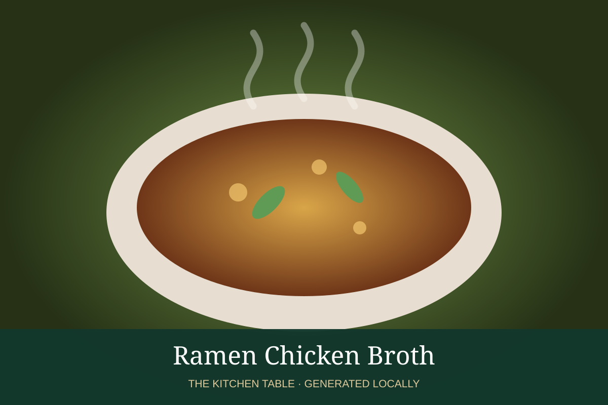

← Back to all recipes
BROTH & STOCK · JAPANESE
Ramen Chicken Broth
Clear but rich chicken ramen broth designed to be seasoned with a separate tare.
Broth & StockJapanese

Ingredients
- 4 lb chicken backs and wings
- 1 onion
- 1 leek
- 2 inches ginger
- 6 garlic cloves
- 1 piece kombu, optional
- 4 qt water
Preparation
- Blanch chicken briefly and rinse.
- Cover with fresh water and maintain a gentle simmer 4 hours.
- Add aromatics for the final hour.
- Strain; season each bowl with tare rather than heavily salting the stock.